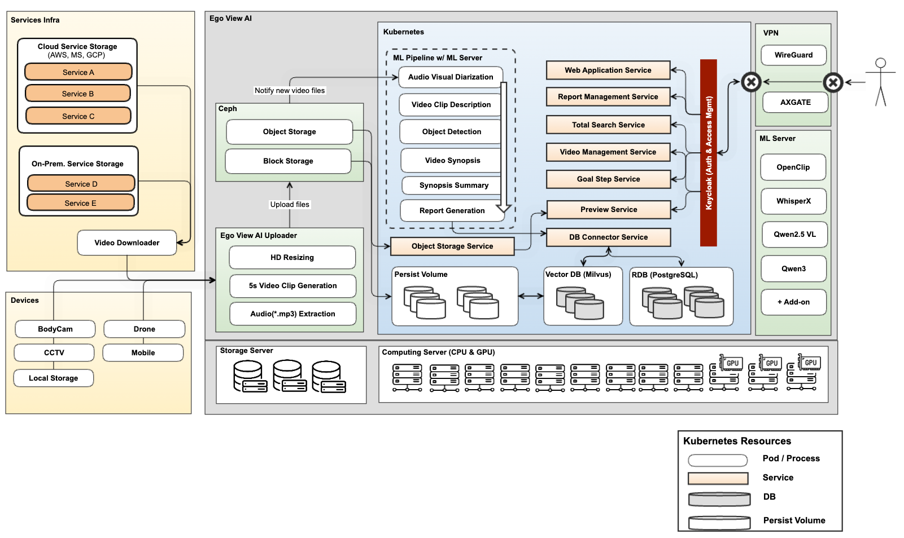
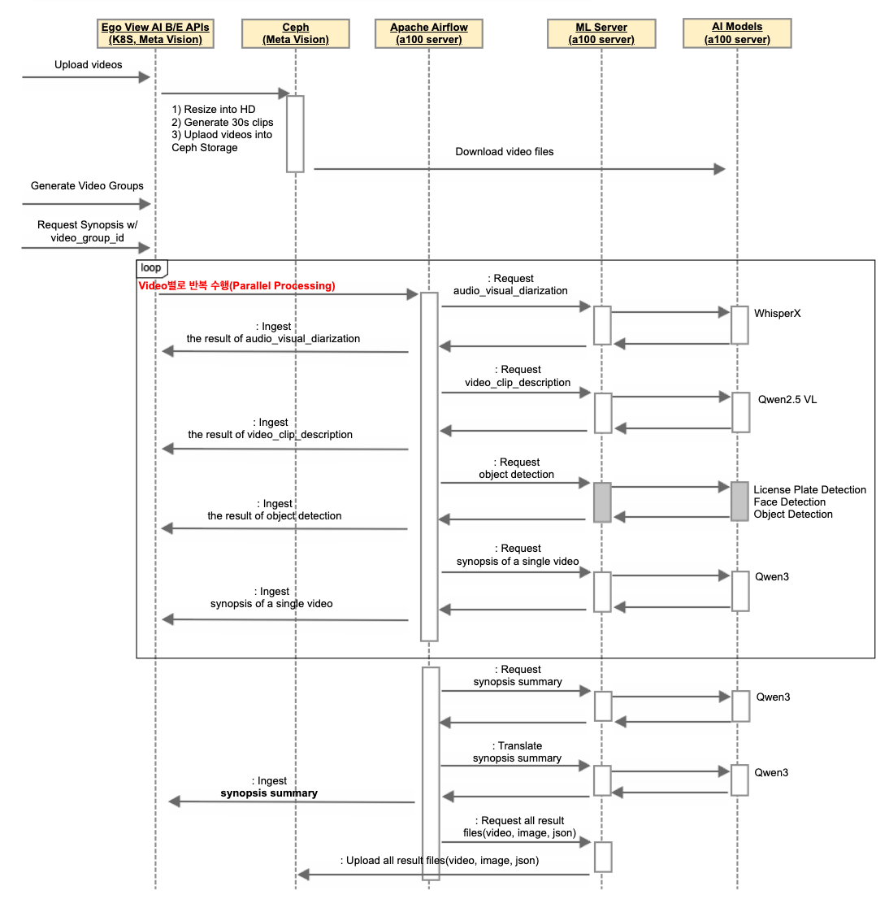
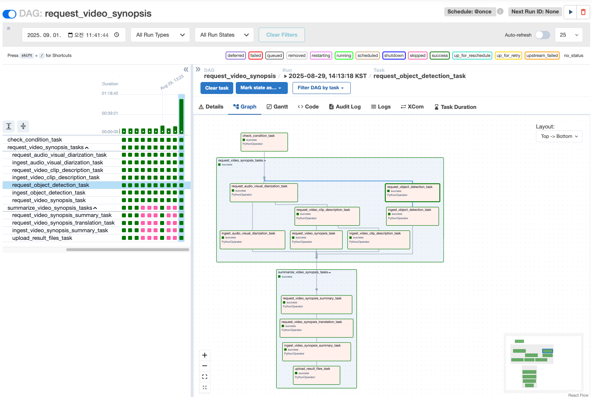
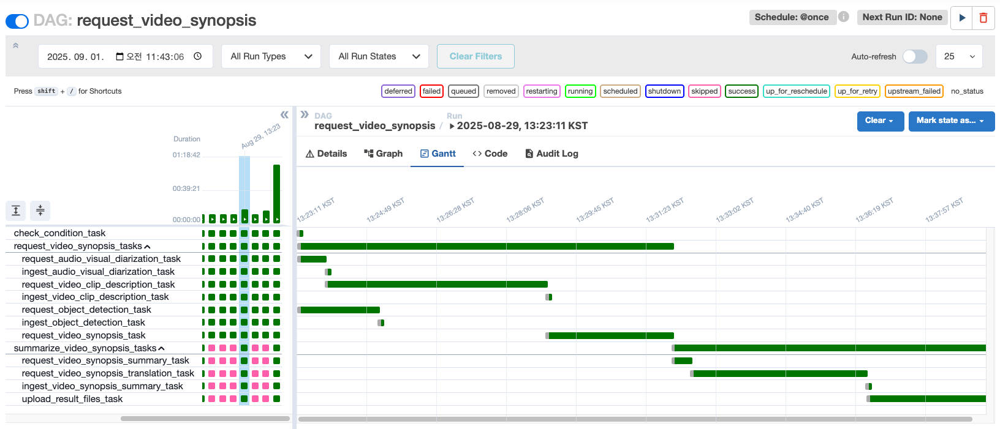

1. System Architecture¶
Meta Vision 인프라를 기반으로 하여, video 분석을 위한 여러 모델 및 ML Server를 구축하고 이를 연동하기 위한 ML Pipeline을 Apache Airflow를 활용하여 구축함

2. Main Features & Models¶
1) 주요 기능 및 사용 모델¶
- 음성분석 및 화자 분리
- WhisperX 모델 사용
- 비디오에서 오디오(*.mp3)를 추출하여, 화자별 대화기록을 추출
- 비디오 내용 분석
- Qwen2.5 VL
- 분석할 비디오를 5~30초 간격으로 클립 비디오를 생성하고, 이 단위로 비디오 요약을 추출
- 텍스트 요약 및 리포트 생성
- Qwen3
- 대화기록, 비디오 요약 등의 내용을 요약하고, 타겟 서비스에 맞게 리포트 생성
- Semantic Search
- OpenClip
- 비디오를 1fps 단위로 Image Embedding을 추출하여, 특정 장면 검색에 활용
- Object Detection
- BBox Detector: YoloX Large 사용
- Face Landmark Detector: Resnet50(Finetuned) 사용
- License Plate Detector: YoloV8(Finetuned) 사용
2) ML Serving¶
- vLLM(Virtual Large Language Model Serving Framework)
- 대규모 언어모델(LLM)을 고속·저비용으로 서빙하기 위한 프레임워크
- Architecture of vLLM
- Qwen2.5 VL 및 Qwen3에 사용
- Nvidia Triton Server
- Nvidia에서 제공하는, AI 모델을 GPU/CPU 환경에서 효율적·대규모로 서빙할 수 있도록 하는 범용 추론 서버
- Nvidia Triton Inference Server
- Object Detection에 사용
- Ray Serve
- 분산형 AI 모델 서빙(Scalable Model Serving) 프레임워크
- Ray Project
- WhisperX에 사용
3) ML Workflow¶
Sequence Diagram¶

Apache Airflow¶
-
비디오 분석 워크플로우 
-
DAG별 Task Duration 모니터링 